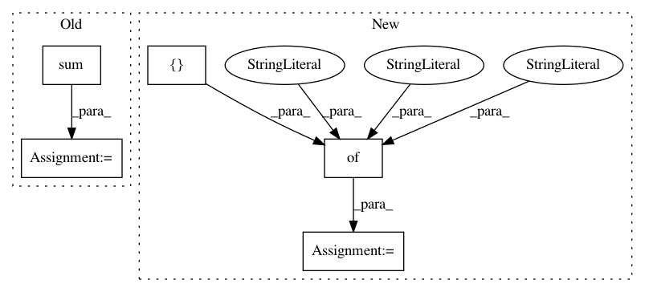

ce2884f0a7dc26087a5225bc92e39643920e3e16,GPy/kern/linear.py,linear,dpsi2_dmuS,#linear#Any#Any#Any#Any#Any#Any#,169
Before Change
self._psi_computations(Z, mu, S)
AZZA = self.ZA.T[:, None, :, None] * self.ZA[None, :, None, :]
AZZA = AZZA + AZZA.swapaxes(1, 2)
target_S += (dL_dpsi2[:, :, :, None] * self.ZA[None, :, None, :] * self.ZA[None, None, :, :]).sum(1).sum(1)
dpsi2_dmu = (dL_dpsi2[:, :, :, None] * np.tensordot(mu, AZZA, (-1, 0))).sum(1).sum(1)
target_mu += dpsi2_dmu
def dpsi2_dZ(self, dL_dpsi2, Z, mu, S, target):
After Change
//include <omp.h>
//include <math.h>
weave_options = {"headers" : ["<omp.h>"],
"extra_compile_args": ["-fopenmp -O3"], //-march=native"],
"extra_link_args" : ["-lgomp"]}
N,M,Q = mu.shape[0],Z.shape[0],mu.shape[1]
weave.inline(code, support_code=support_code, libraries=["gomp"],
arg_names=["N","M","Q","mu","AZZA","AZZA_2","target_mu","target_S","dL_dpsi2"],
In pattern: SUPERPATTERN
Frequency: 3
Non-data size: 5
Instances
Project Name: SheffieldML/GPy
Commit Name: ce2884f0a7dc26087a5225bc92e39643920e3e16
Time: 2013-05-07
Author: james.hensman@gmail.com
File Name: GPy/kern/linear.py
Class Name: linear
Method Name: dpsi2_dmuS
Project Name: kengz/SLM-Lab
Commit Name: d670e94d3f8e938858e938b1d3efeac5389a26d3
Time: 2017-12-17
Author: lgraesser@users.noreply.github.com
File Name: slm_lab/experiment/control.py
Class Name: Session
Method Name: run_episode
Project Name: SheffieldML/GPy
Commit Name: ce2884f0a7dc26087a5225bc92e39643920e3e16
Time: 2013-05-07
Author: james.hensman@gmail.com
File Name: GPy/kern/linear.py
Class Name: linear
Method Name: dpsi2_dZ